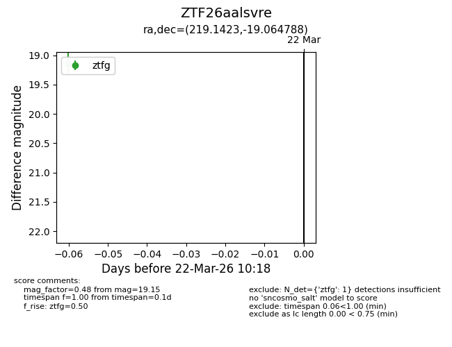
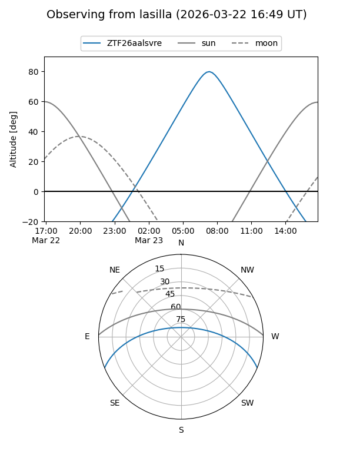
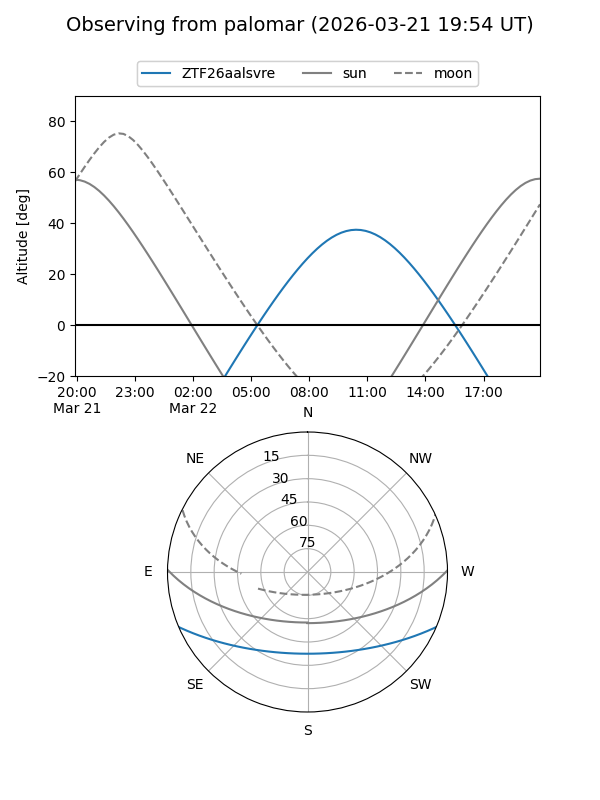

ZTF26aalsvre
Target ZTF26aalsvre at 2026-03-22 10:23
Aliases and brokers:
FINK: link
Lasair: link
ALeRCE: link
alt names
ZTF26aalsvre (ztf,fink_ztf)
Coordinates:
equatorial (ra, dec) = 219.1423,-19.06479
equatorial (HMS+DMS) = 14:36:34.16,-19:03:53.24
galactic (l, b) = (334.6513,+37.24824)
Flags:
Photometry:
last ztfg=19.15
1 ztfg detections
Lightcurve

Visibility


Additional plots